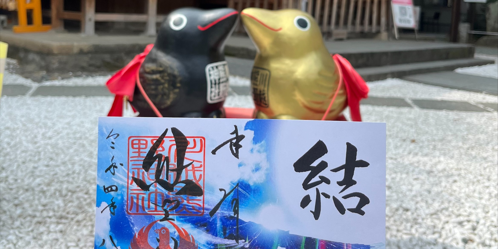
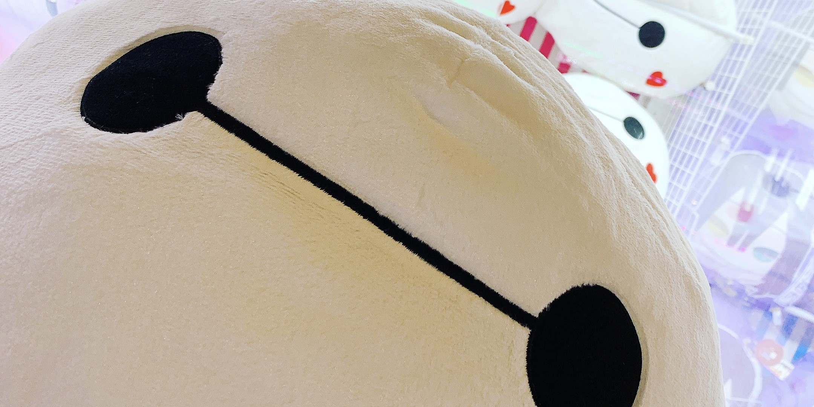
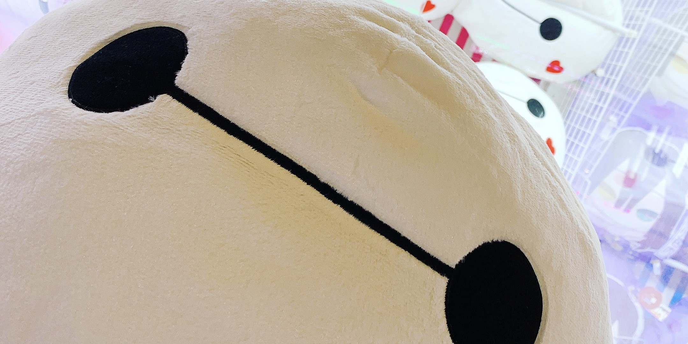
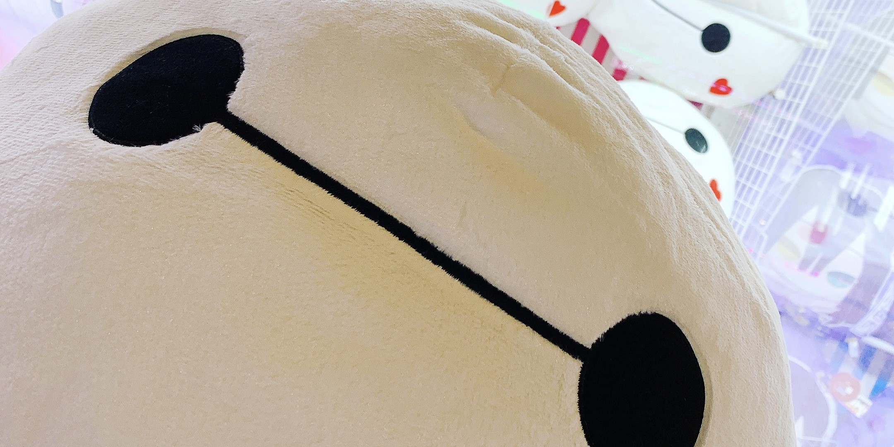
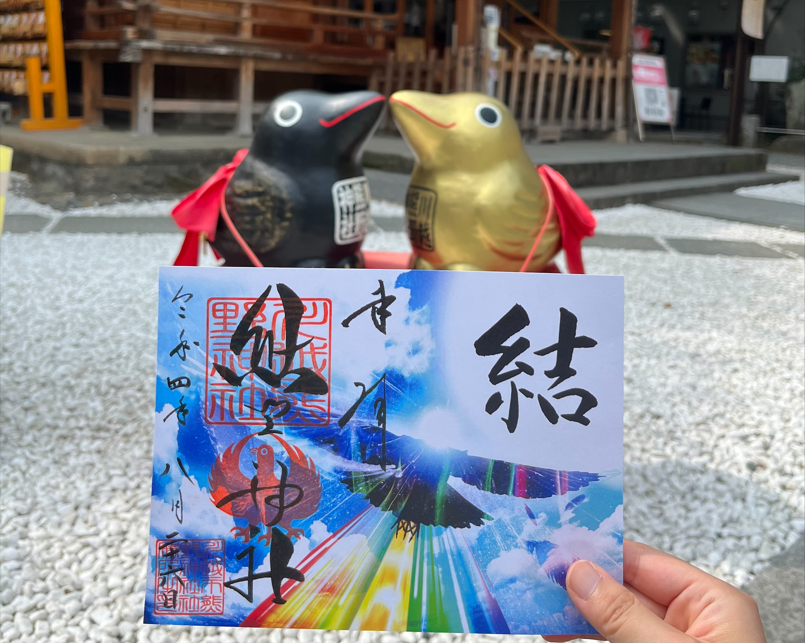
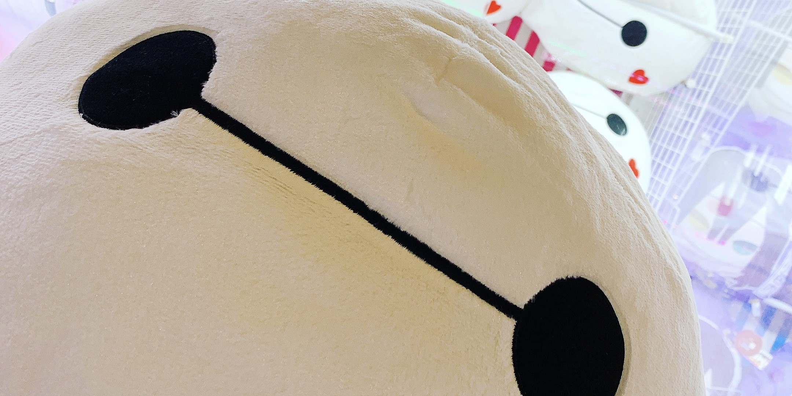

 




わたしのこと。

わたしのこと。
Flyer
夢は「自分を見つけること」
小さな頃からアナウンサーを目指し、
学級委員や放送部等積極的に活動してきた。
しかしいつも他人と比べてしまって、
気づけば自分がどこか遠くの場所に行ってしまった。
自分を見つけたい、そんな一心で様々な道へ進んでは迷ってしまう。
唯一無二の自分を求めて今歩んでいる道は、
webデザイナーの道。
webデザインで、自分へたどり着く。
趣味はゲーム、特技は就寝、好きな漫画はスラムダンク。
なんでこの時代に生まれてきたんだろう、と呑気に考えたりする哲学系女子。
旅行が好きで、そこでしかできない写真を撮って体験をしたい。
世界一周するのも夢。
他人からは真面目で良い子、明るい子と言われるので悪い子になりたい。
究極の猫かぶりのため、
皮が剝がれてくると人間的にバカな部分が出てくるので注意。
お酒は1人で飲むのではなく、
みんなで飲んでたくさん話すことを楽しむ派。